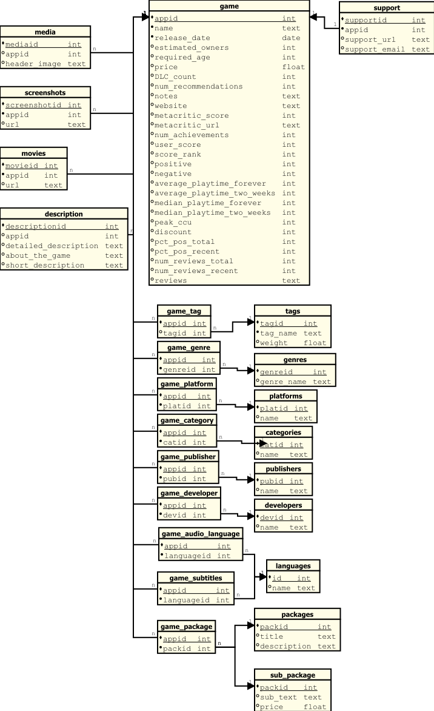

„C” relációs séma normalizálás
Bevezetés
A kiindulópont négy külön CSV-fájl volt:
games_march2025_cleanedgames_march2025_fullgames_may2024_cleanedgames_may2024_full
A full állományok a teljes, nyers adatokat tartalmazták minden mezővel, míg a
cleaned változatok előfeldolgozott, tisztított adatokkal rendelkeztek.
A 2025-ös CSV-kben található egy további mező is (discount), amely a 2024-es
verziókban még nem szerepelt.
Normalizálás lépései
Első normálforma (1NF)
Az eredeti CSV-kben több attribútum nem atomi értékeket tartalmazott (pl.
screenshots,tags,categories,genres,supported_languages,full_audio_languages).Ezeket külön táblákba helyeztem, hogy minden attribútum atomi legyen.
Külön entitások jöttek létre:
media,screenshots,movies,description,categories,genres,languages,platforms,packages.A nyelvi mezők (
supported_languages,full_audio_languages) két relációra bontva kerültek tárolásra:game_subtitles– a játék–nyelv kapcsolat feliratkéntgame_audio_language– a játék–nyelv kapcsolat hang (szinkron) formájában
Második normálforma (2NF)
A játék fő táblájának elsődleges kulcsa az
appid.Az olyan adatok, amelyek csak az
appid-tól függtek, de nem a játék többi jellemzőjét írták le, külön táblákba kerültek:support– támogatási információk (URL, email)media– fejlécképscreenshots– képernyőképekmovies– előzetesek, videókdescription– részletes, rövid és általános leírásokcategories– kategóriákgenres– műfajoklanguages– nyelvek (önálló tábla, a megnevezésekkel)developers– fejlesztőkpublishers– kiadóktags– címkékplatforms– támogatott platformokpackages– játékcsomagok (részletesen lásd lejjebb)
A redundáns szöveges ismétlődéseket megszüntettem úgy, hogy az entitások saját táblákban tárolják a neveket, és csak azonosítók szerepelnek a kapcsolatokban.
Harmadik normálforma (3NF)
A tranzitív függőségeket megszüntettem:
a
categories,genres,languages,developers,publishers,tags,platforms,packagestáblák önállóan tartalmazzák a megnevezéseketa játék és ezek az entitások közötti több-több kapcsolatot külön asszociatív táblák kezelik
A csomagstruktúra három szinten valósul meg:
game_package (appid, packid)– a játék és csomag közötti kapcsolatpackages (packid, title, description)– a csomag alapadataisub_package (packid, sub_text, price)– az adott csomag al-elemei és ára
Asszociatív táblák:
game_category (appid, categoryid)game_genre (appid, genreid)game_subtitles (appid, languageid)game_audio_language (appid, languageid)game_developer (appid, developerid)game_publisher (appid, publisherid)game_tag (appid, tagid)game_platform (appid, platformid)game_package (appid, packid)
Így kiküszöböltem az adatredundanciát, és biztosítottam az adatok konzisztenciáját.
Végső séma – „C” reláció
A normalizálás eredményeként a „C” séma a következő relációkból áll:
game– játék alapadatai (appid, név, dátum, ár, értékelések, valamint a 2025-ös verziókban adiscountmező)support– támogatási információkmedia– fejlécképscreenshots– képernyőképekmovies– előzetesek, videókdescription– leírásoktags– címkékgenres– műfajokplatforms– platformokcategories– kategóriákpublishers– kiadókdevelopers– fejlesztőklanguages– nyelvek (egyedi név)packages– csomagok (alap adatok)sub_package– csomag al-elemei (leírás és ár)
Kapcsolótáblák:
game_tag– játék–címke kapcsolatgame_genre– játék–műfaj kapcsolatgame_platform– játék–platform kapcsolatgame_category– játék–kategória kapcsolatgame_publisher– játék–kiadó kapcsolatgame_developer– játék–fejlesztő kapcsolatgame_audio_language– játék–hangnyelv kapcsolatgame_subtitles– játék–felirat kapcsolatgame_package– játék–csomag kapcsolat
Összefoglalás
A C relációs séma eredménye egy egységes, tiszta és normalizált adatmodell, amely:
Négy külön CSV redundáns tárolásából egy konzisztens sémát hozott létre
Biztosítja az 1NF, 2NF és 3NF követelményeit
Külön kezeli a feliratokat (
game_subtitles) és a hangnyelveket (game_audio_language)Kezeli a több-több kapcsolatokat asszociatív táblák segítségével
Normalizáltan kezeli a csomagokat három szinten: játék–csomag, csomag–adat, csomag–alrész
Csökkenti az adatredundanciát és megkönnyíti a karbantartást
Rugalmasan kezeli a különbséget a 2024-es és 2025-ös adatforrások között (a
discountmező a 2025-ös CSV-kben szerepel, a 2024-esekben nem)Könnyen bővíthető a jövőben további entitásokkal és attribútumokkal
Relációs séma diagram
{kind=link}
Dictionary
Az „C” adathalmaz dictionary-je az alábbi linken érhető el: